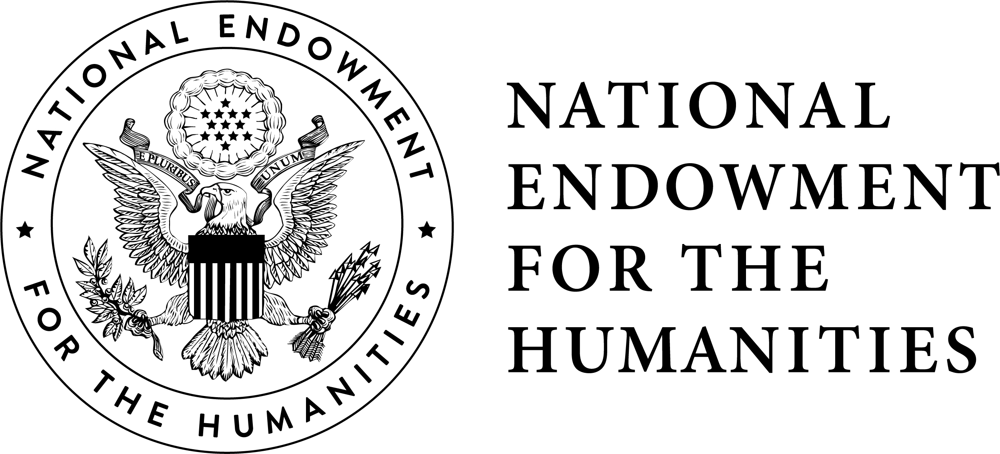

Print & Probability is an interdisciplinary, NEH- and NSF-funded project at the intersection of book history, computer vision, and machine learning that seeks to discover letterpress printers whose identities have eluded scholars for several hundred years.
What we do
Our team of book historians, statisticians, computer scientists, and librarians tackles bibliographical mysteries by modeling the material conditions of early modern print shops — including fonts, distinctive and damaged pieces of type, paper, inking, and imposition.
Learn more: lecture on methods, Bibliography Week at the Grolier Club 2022
Our team
Print & Probability is a collaboration among researchers from Carnegie Mellon University and the University of California, San Diego. The team is led by Taylor Berg-Kirkpatrick (UCSD Computer Science), Max G’Sell, and Christopher Warren (CMU English and History) and also includes Matthew Lincoln (JSTOR Labs), Kartik Goyal (Georgia Tech), Nikolai Vogler (UCSD CS PhD Student), Sam Lemley (CMU Libraries), Elizaveta Pertseva (UCSD undergrad), Kari Thomas (CMU History PhD Student), D.J. Schuldt (Simmons MLIS student), Elizabeth Dieterich (CMU English PhD Student), Laura DeLuca (CMU English PhD Student), John Ladd (Washington & Jefferson Computing and Information Studies), and Jonathan Armoza.
Tools
Our beta Coloring Book Paper Analysis Tool works using remote IIIF images from repositories such as the British Library, Internet Archive, the Harry Ransom Center, and the Folger Shakespeare Library. Users can generate and study LUV or RBG color profiles for each page (leaf) in a digitized book, permitting the fine-grained investigation of alterations, interruptions, and continuities in paper-stocks and the sequencing of printing. Print & Probability team member Laura DeLuca was awarded a grant from the Bibliographical Society of America to produce an instructional video on the Coloring Book tool. View the video here:
The Print & Probability Workbench is a Django-powered REST API for powering P&P’s data transformation and tagging pipeline. To classify characters, we use Ocular, a state-of-the-art historical OCR system developed in part by team co-lead Taylor Berg-Kirkpatrick.
Publications
Recent & Upcoming Presentations
- “Whig Data: Milton’s Printers in the Restoration,” International Milton Society (2023)
- “Mincing Words: Computational Bibliography as Cookery,” Renaissance Society of America (2023)
- “The Early Modern Book of Numbers,” Shakespeare Association of America (2023)
- “Contrastive Attention Networks for Attribution of Early Modern Print,” Association for the Advancement of Artificial Intelligence (AAAI) (2023)
- “Freedom and the Press before Freedom of the Press,” The Grolier Club Bibliography Week Lecture (2023)
- “Shakespeare, Print Networks, and the History of Clandestine Printing,” Networks 2021
- “Computational Bibliography: Techniques and Analyses,” Association for Computers and Humanities (2021)
In the News
- Interdisciplinary CMU Project Restores Access to Essential Humanities Resource (ESTC)
- A Man of Letters: Literary detective Christopher Warren ’99 unlocks the mysteries of centuries-old texts and secretive printers
- ‘Rpinces’ Have But Their Titles
- CMU Group Outs Printer of Embarrassing Typographic Error
- Tracing the Origins of Secretly Printed Documents
- David M. Shribman: The Lessons of Areopagitica
- Freedom, They Printed: AI on XSEDE-allocated system solves mystery of who printed seminal works on liberty
- [PODCAST: NLP Highlights] Automated Analysis Of Historical Printed Documents, with Taylor Berg-Kirkpatrick
- CMU Projects Sleuth Secret Printers, Teach Shakespeare in VR
- CMU Receives NEH Grant To Develop Bibliographic Tools
Awards
- RBS’s Andrew W. Mellon Society of Fellows in Critical Bibliography Awards, Second Annual Essay Prize (Honorable Mention)
Project Alumni
Shruti Rijhwani, Dan Evans, Avery Wiscomb, Pierce Williams, Craig Stamm, Sriram Viswanathan
Project Support
Print & Probability gratefully acknowledges grants from CMU Mellon Seed Grants, the National Science Foundation, and the National Endowment for the Humanities.

